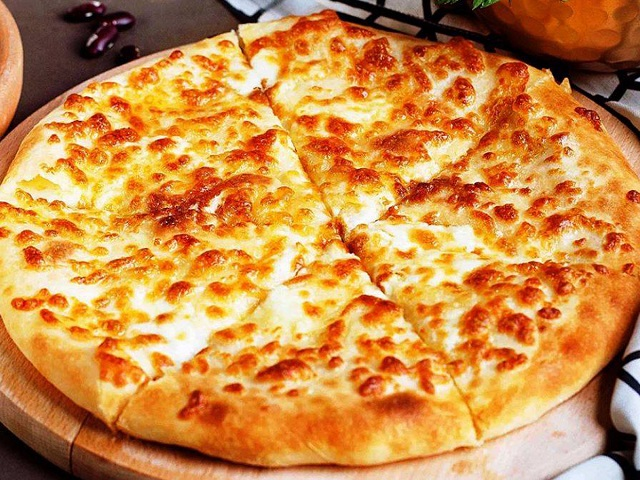
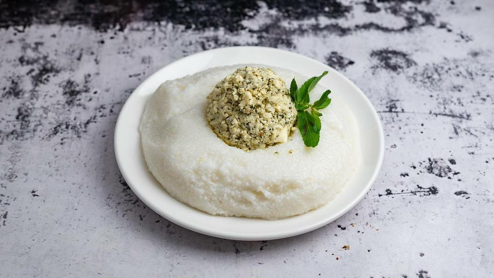
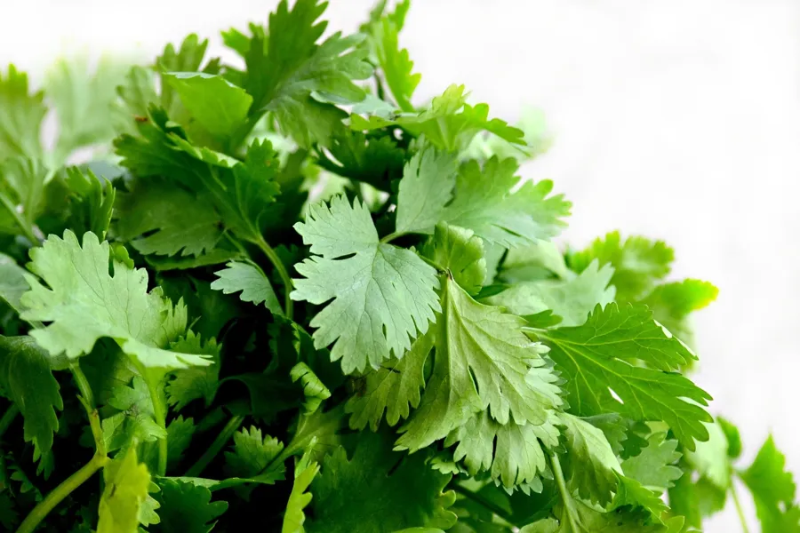
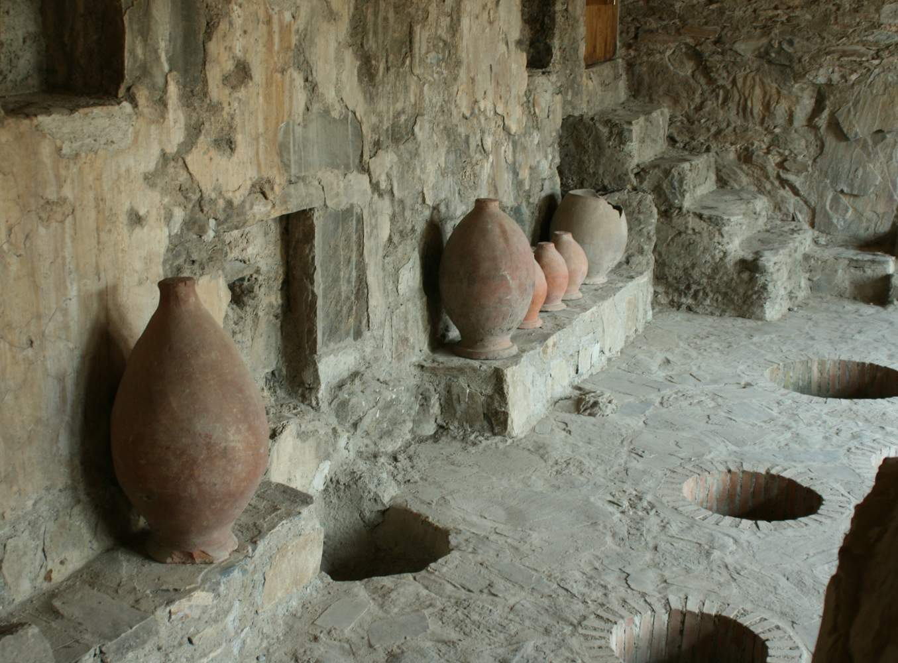
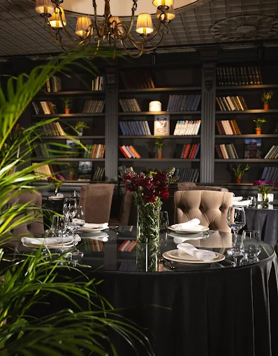

სიმკვეთრე, სიმდიდრე და ყველის ხელოვნება — სამეგრელოს სამზარეულო საქართველოს ერთ-ერთი ყველაზე გამორჩეული და ვნებიანი გემოს სამყაროა.
კულინარიული პორტრეტი
სამეგრელო დასავლეთ საქართველოს ნოტიო, სუბტროპიკული კუთხეა, სადაც კოლხეთის დაბლობი, ბიჭვინთის ტყეები და ასეული წლის სოფლის ტრადიციები ქმნიან სამზარეულოს, რომელიც საქართველოში ყველაზე ცხარე და ყველაზე გამორჩეულია.
მეგრული სამზარეულო გამოირჩევა კაკლის, ბალახოვანი მწვანილისა და სანელებლების ექსპრესიული გამოყენებით. აქ აჟიკა არ არის მხოლოდ გვერდითი სოუსი — ის სამზარეულოს სული და ამოსავალი წერტილია. სულგუნის ყველი, რომელიც სამეგრელოში დაიბადა, მსოფლიოს ულამაზესი რძის ხელოვნებაა.
სუფრა სამეგრელოში საზოგადოების გული და ოჯახის სიამაყეა — გულუხვი, ნოყიერი და უსაზღვრო სტუმართმოყვარეობის გამოხატულება.
სამეგრელოს გემოების კვინტესენცია — კერძები, რომლებმაც ისტორია შექმნეს

✦ საკულტო კერძიMegrelian Khachapuri
სამეგრელოს ყველაზე სახელგანთქმული კერძი — ხაჭაპური, რომელიც სხვა ყველა ვარიანტს სიმდიდრით სცდება. გარედანაც და შიგნიდანაც სულგუნის ყველით გაჟღენთილი, ოქროსფრად გამომცხვარი პური, რომელსაც ერთი ნაჭრის შეჭმა შეუძლებელს ხდის. ყველის ორმაგი ფენა ქმნის გამდნარ, ძაფიან სტრუქტურას, რომელიც სამეგრელოს პრაიდია.

02 · კლასიკა
Elarji — ყველიანი ღომი
სიმინდის ფქვილისა და სულგუნის ყველის შეუდარებელი სინთეზი. ღომი ნელ ცეცხლზე მოიხარშება, ხოლო ყველი ნელ-ნელა ემატება, ვიდრე მასა ძაფიანი, ელასტიური და გამდნარი არ გახდება. ელარჯი სამეგრელოს ყველაზე სასიამოვნო კომფორტ-საკვებია.

03 · განსაკუთრებული
Gebzhalia — ყველის რულეტი
ახალი სულგუნი, რომელიც თხელ ლიფებად გაიშლება და შეივსება პიტნის, ნიორის და სანელებლების ნაზი ნარევით. შემდეგ ყველი ახალ, ნოყიერ სულგუნის სოუსში ცურავს — გემო, რომელიც სამეგრელოს კულინარიული ელეგანტურობის სიმბოლოა.

04 · ტრადიცია
Kupati — ქართული კოლბასი
სამეგრელოს ხელნაკეთი ღორის კოლბასი — ერთ-ერთი ყველაზე ავთენტური და ნოყიერი ქართული კერძი. ხორცი სანელებლებით, ნიორით, ბარბარისით და ფინიკის ხით ივსება, შემდეგ კი ცეცხლზე ან გრილზე იხარშება.
05 · ბაზა
Ghomi — სიმინდის ქაშა
სამეგრელოს ყოველდღიური მარჩენალი — კარგი ხარისხის სიმინდის ფქვილისგან შემზადებული სქელი ქაშა. ღომი ყველასთვის ეწოდება: ელარჯს, ჭვიშტარს და სხვა ვარიანტებს. მარტივი, მაგრამ სულით სავსე — სამეგრელოს სამზარეულოს გული.

06 · პური
Chvishtari — სიმინდის პური
სიმინდის ფქვილით გამომცხვარი ქართული პური, სავსე სულგუნის ყველით. ჭვიშტარი სამეგრელოს ყველაზე ყოველდღიური პური, რომელიც ყველა ოჯახის სუფრაზე ყოველ გამთენიაა.

07 · ბოსტნეული
Phuchkholia — მეგრული ბოსტნეულის კერძი კაკლით
ფუჩხოლია სამეგრელოს ტრადიციული ბოსტნეულის კერძია — ხშირად გოგრასა და სხვა ბოსტნეულს კაკლის, ნიორისა და მწვანილის სოუსთან ერთად ამზადებენ. ნაზი, ნოყიერი გემო დასავლეთ საქართველოს სუფრისთვის დამახასიათებელია.
კულინარიული ფილოსოფია
შეძლებთ იპოვოთ ადამიანი, რომელიც ძველი ქართული ტრადიციებისა და მდიდარი ისტორიის ფონზე შექმნილ ქართულ სამზარეულოს გულგრილად მოიხსენიებს?
იცოდით რომ ძველ დროში სუბტროპიკული და რბილი ჰავის გამო დასავლეთ საქართველოში ინფექციური დაავადება, მალარია, იყო გავრცელებული?
დასავლეთ საქართველოს მცხოვრებლებმა გამოსავალს მიაგნეს. მეგრულ სამზარეულოში წიწაკის და ცხარე სანენებლების გამოყენება დაიწყეს. წიწაკის გამოყენება ნაწილობრივ აფერხებდა მალარიის გავრცელებას. მეგრული სამზარეულო დღეს ამ ცხარე კერძებით გამორჩევა.
მეგრული სამზარეულო დღეს ამ ცხარე კერძებით გამორჩევა.
„სამეგრელოში ყველაზე კარგი კერძი ის არ არის, რომელსაც ყველაზე ძვირი ინგრედიენტები აქვს — ის კერძი, რომელიც ყველაზე მეტი სიყვარულითაა მომზადებული."
— მეგრული სამზარეულოს ოსტატი
სამეგრელო სულგუნის ყველის სამშობლოა. ნამდვილი სულგუნი მხოლოდ ახალ, სუფთა ძროხის რძეს, ოსტატ ხელსა და დროს სჭირდება.
მეგრული აჟიკა ყველაზე ცხარე და ყველაზე სურნელოვანი ვარიანტია. ის ამ რეგიონის განსაკუთრებული ბოტანიკური სიუხვის შედეგია.

კოლხეთის სუბტროპიკული კლიმატი ქმნის განსაკუთრებულ მწვანილს — კამა, ოხრახუში, პიტნა, კინძა ყოველ კერძში ახალია.

ზამთრისთვის ჯამი სასიამოვნო — ტყის ხილის ლეგვები, მჟავე კომბოსტო, კაკლის ჩამოსხმები — ყოველი ოჯახის ციხე-სიმაგრის ნაწილია.
საუკეთესო სამეგრელოური სამზარეულო — საბესელიოში, ზუგდიდში, თბილისსა და ქუთაისში
 ✦ საბესელიო
✦ საბესელიო
Sabeselio · მეგრული სუფრა
ეგრისის რაიონში, საბესელიოს მიდამოებში განთავსებული რესტორანი, სადაც ტრადიციული მეგრული კერძები და ოჯახური სტუმართმოყვარეობა ერთმანეთს უხდება.
დაჯავშნა ✦ ზუგდიდი
✦ ზუგდიდი
ზუგდიდი · ხალხური სტილი
ზუგდიდის ცენტრში, თამარ მეფის ქუჩაზე — ადგილი, სადაც მეგრული სამზარეულოს კლასიკური გემოები ტრადიციულ გარემოში გეგემებათ.
დაჯავშნა
✦ თბილისითბილისი · 31 Atoneli St
დედაქალაქში მეგრული სახლის ინტერიერი და სამზარეულო — ხაჭაპური, ელარჯი, გებჟალია და სხვა მეგრული კლასიკა ერთ სივრცეში.
დაჯავშნა ✦ თბილისი
✦ თბილისი
თბილისი · Marshal Archil Gelovani Ave
„ოდის“ არქიტექტურული სტილი და მეგრული სუფრა — ადგილი, სადაც დასავლეთ საქართველოს კულინარია დედაქალაქის რიტმში იგრძნობა.
დაჯავშნა ✦ ქუთაისი
✦ ქუთაისი
ქუთაისი · ბარი და სამზარეულო
ქუთაისის ცენტრში — ნინოსეული გთავაზობთ მეგრულ კერძებსა და თანამედროვე ბარის ფორმატს ერთდროულად.
დაჯავშნა ✦ ქუთაისი
✦ ქუთაისი
ქუთაისი · ილია ღობეშვილის ქუჩა
ღობეშვილის ქუჩაზე, ეზოს გარემოში — მეგრული სამზარეულო და დასვენების სივრცე, სადაც სტუმართმოყვარეობა ტრადიციის ნაწილია.
დაჯავშნა